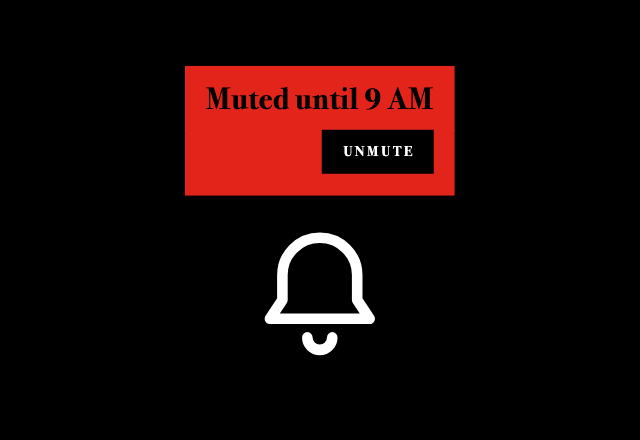
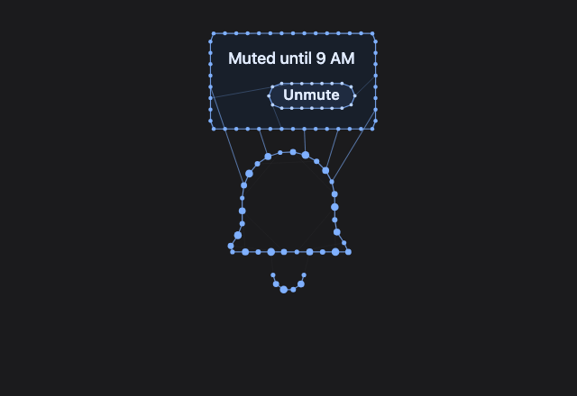
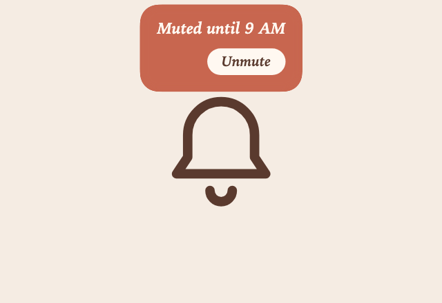
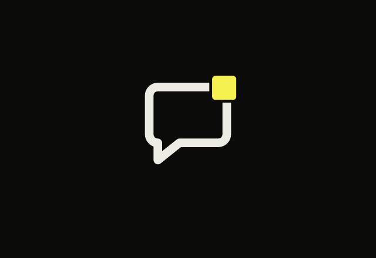
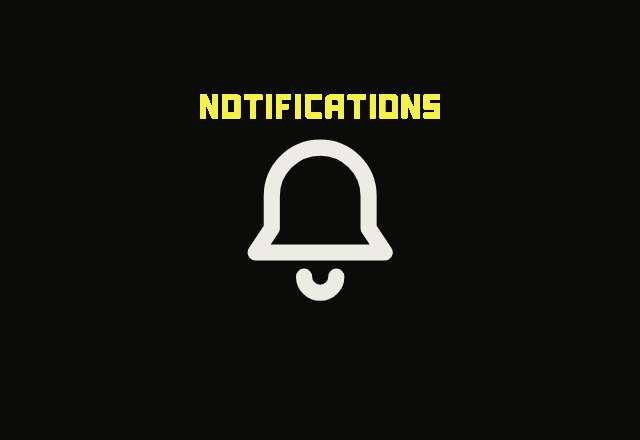
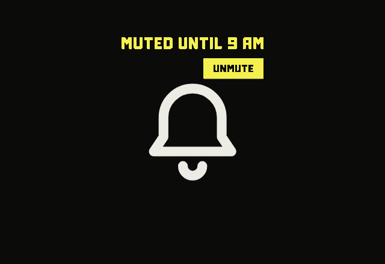
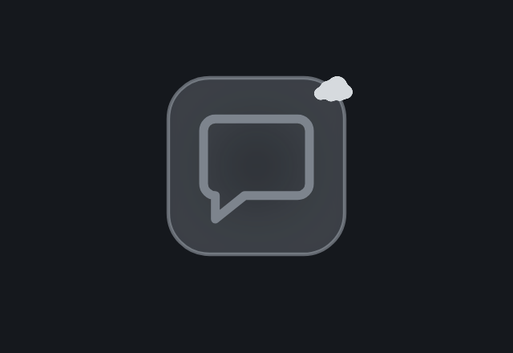
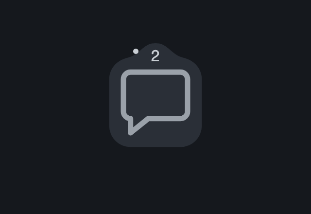
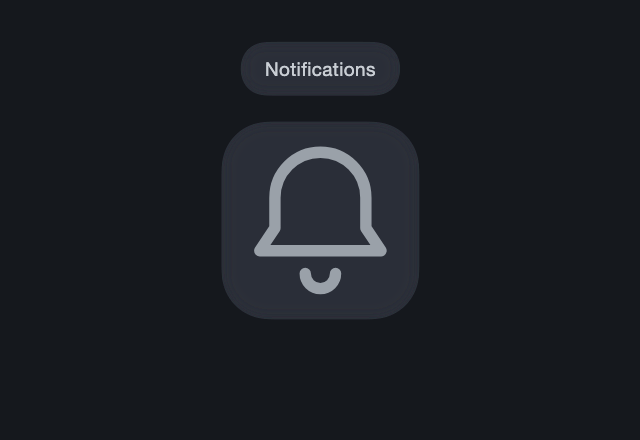
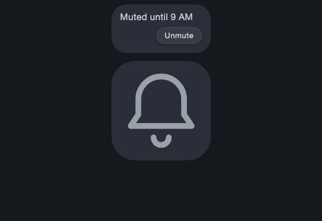

Ten components: five sets, each one badge and one tooltip, each set expressing a tone. Tones can repeat across sets. Every design has to do its job. Each one gets a working prototype, with the versions tried along the way shown as its process.
Both need an anchor, a placeholder element to attach to. The brief's badges sit on a bottom bar (Mail, Chat, Rooms, Meet). Its tooltips float free, but a prototype needs something to hover, so every tooltip here gets an anchor too.
What each prototype has to show
Anchor
Must show
Badge
An icon, like Mail, where the badge appears and disappears
No badge ↔ dot badge, with no content No badge ↔ badge with content: a number, text or icon
Tooltip
A hoverable anchor
A plain tooltip: text only, no action A rich tooltip with a clickable action
Five sets, one badge and one tooltip each, every set with a tone. Tones can repeat across sets.
Research
Both are small messages attached to something else. The difference is who starts the conversation.
Badge or tooltip
Badge
Speaks
Unprompted, always visible
Says
Status or amount: new, how many, live
Sits
On the anchor's corner, never over its centre
Must
Hide at zero, cap big numbers
Screen reader
Folded into the anchor's name: “Mail, 3 unread”
Tooltip
Speaks
Only when the anchor is hovered or focused
Says
What the anchor is, or what it will do
Sits
Beside the anchor, never covering it
Must
Show on keyboard focus too, dismiss with Esc
Screen reader
role="tooltip", linked with aria-describedby
Rules the tone has to survive
Claim only what is known
A dot says “new”, a count says “how many”. Pick the one the system can back up.
Stay smaller than the anchor
Overflow caps at 99+, so the badge never swallows the icon.
Never colour alone
A badge needs a number, a word or a shape, not only red.
Dismissible, hoverable, persistent
WCAG 1.4.13: Esc closes it, the pointer can move onto it, it stays until you leave.
Supplementary, not essential
If the task fails without the tooltip, the text belongs on the page.
Wait a beat
A short hover delay stops tooltips flashing as the pointer passes.
Pattern survey
The brief's bottom bar with live badges, four badge forms, and four tooltips. Change the count and the delay, then hover or tab through the anchors.
Live demo. Interact with it here or view it larger.
Micro motion
A badge is about 16 pixels and a tooltip is a few words, so neither has much room to carry a tone. How it moves is one of the few places left. Dan Saffer's four parts of a microinteraction map neatly onto both.
Triggerwhat starts it
Ruleswhat it may do
Feedbackwhat you see
Loops and modeswhat happens next
Badge
The system: a message arrives
Hide at 0, cap at 99+, clear when opened
Arriving, and changing count
Does it move again, or rest once it has spoken?
Tooltip
The person: hover or keyboard focus
Wait before showing, stay while hovered, Esc closes
Entering, and leaving
Warm mode: once one is open, neighbours open faster
Timing
Every duration on one scale. The shaded end is where motion starts to drag.
Motionpast 500 ms it drags
Small feedback, a state changeNN/gabout 100 ms
A small component enteringMaterial 3, short4200 ms
LeavingNN/gshorter than entering
Tooltip wait
First hoverWindows default500 ms
Next anchor overWindows default100 ms
0 ms100200300400500600
Table view
Moment
Duration
Source
Small feedback, a state change
About 100 ms
NN/g
A small component entering
200 ms
Material 3, short4
Leaving
Shorter than the entrance
NN/g
Anything UI
Past 500 ms it starts to drag
NN/g
Tooltip, first hover
500 ms wait
Windows default
Tooltip, next anchor over
100 ms wait
Windows default
Windows also hides a tooltip after 5 seconds by default. WCAG 1.4.13 says the opposite: it should stay until the pointer leaves or Esc is pressed. Here WCAG wins.
Easing
Each curve plots progress against time, and the dot under it runs on that curve.
Ease-incubic-bezier(0.3, 0, 0.8, 0.15) Leaving. Gathers speed and goes.
Overshoot, a spring Entering, with character. Playful, physical, a little loud.
Linear Almost never. Mechanical. Useful only when mechanical is the tone.
Motion costs attention
Motion is the strongest signal a badge has. In Bartram, Ware and Calvert's study, icons with simple motion were often detected better than colour or shape codes, especially at the edge of vision. The same study measured how much each kind of motion distracts. A badge that moves is louder than one that is red, so motion should be spent at the moment of change, then stop.
Move once, then rest
A badge that keeps pulsing turns into noise. Past 5 seconds, looping motion needs a way to stop it (WCAG 2.2.2).
One thing at a time
Several things moving at once cancel each other out.
Reduced motion
With prefers-reduced-motion, swap movement for a fade or a cut (WCAG 2.3.3). The meaning has to survive without the motion.
Where tone lives in the motion
QuietLeverLoud
Short, 100 to 200 msDurationLong enough to watch, up to 500 ms
Ease-out, no overshootCurveSpring, bounce, shake
In place: fade, a few pixelsDistanceTravels: drops in, flies out
Swap in placeCount changeRoll, pulse, shake
OnceRepetitionAgain on every new item
From nowhere, a fadeOriginFrom the anchor, grows out of the thing it describes
Motion study
One badge and one tooltip, changed only in how they move. Each badge card replays on its own, tooltips open on hover, a slow-mo slider stretches everything up to ten times so the curves can be read, and each card notes what it falls back to under reduced motion.
Live demo. Press ▶ on a badge, hover the tooltips, drag slow-mo up.
Into the designs
The anchor is part of the design. A badge has no tone without the thing it sits on.
A badge is about 16 pixels. Tone has to live in its shape, its colour and how it arrives, not in detail.
A tooltip's tone lives in timing, entrance and the voice of its words.
Each set picks its motion on the levers above: duration, curve, distance, count change, repetition and origin. A quiet tone and a loud tone should differ on at least two.
Every prototype also has to work under reduced motion, so the tone cannot live in motion alone.
A set shares a tone, not a shape. The badge and tooltip can share an anchor, or each have their own.
Process
Ideation
Loose sketches, each running live in its box.
TraceA line runs clockwise round the bubble's outline from its upper right corner; where it closes, a dot appears.Frame traceThe bubble stays still while a rounded frame draws itself clockwise round it from its upper right corner; where the frame closes, a dot appears.SpinThe dot spins onto the upper right corner, circling its spot on a tightening ring as it grows.Coin spinThe dot is a thin flat chip: it appears on the upper right corner and turns once in place, narrowing to its rim and opening back to a whole dot.RefreshThe whole icon is written in again, left to right, and the dot at its far right comes in last.ThirdsRefresh in three steps: the icon comes back a third at a time, left, middle, right, and the dot lands with the last.SweepThe dot is revealed clockwise from twelve o'clock, a wedge widening like a clock hand going once round.BookThe dot opens from its centre like a book: two halves folded shut on the centre line swing open to lie flat.SwellThe dot swells from the bubble's middle until it hides the whole icon, then shrinks on its way to the upper right corner.
Deliverables
Ten components, five sets of one badge and one tooltip. Each set shows how it got there, then the moving prototypes.
Every set uses the same two anchors: a Message icon for the badge and a Notification bell for the tooltip. Holding the icons still is the control: whatever differs between the five tones comes from motion and styling alone. The shapes stay fixed; only how they are rendered (stroke, colour, texture) follows the tone.
Left, the badge anchor: a speech bubble, tail at the lower left, so the upper right corner stays clear for the badge. Right, the tooltip anchor: an upright bell, a silhouette that never reads as the bubble.
Set 1 · Dramatic
Process
How the pair got here, one tried version at a time.
Badge
First pass, from the storyboard: a red dot sweeps clockwise round the bubble's left side, swelling on the way, and lands on the upper right corner.The dot as a light source on a dark stage: amber glow, the outline lit wherever it passes, rays on landing.Darker, the background streaks gone, a night-blue light, and a steeper ease-in-out.The landing rays gone; the path left as a smeared mark, like a long exposure. It read as a cloud.The mark as strobe copies of the dot instead, one per frame, fading fast.Started over in black and white: a vortex of twisted bands that inverts the icon and tightens into the dot.After the Swell sketch: a white circle swells over the icon, the outline cut through it, then shrinks into the corner.Now: the circle turned red and stays as the icon's frame, and a black hole travels into the corner as the badge.Now, with content: the whole badge spins like a flicked coin, a 2 on one face and a 3 on the other.
Tooltip
First pass: a 2px red line drawn left to right, as wide as the tooltip, about to part into the box.A hairline with a white point at its tip, quicker and sharper. The white went: one red only.All red, everything bigger, the bell centred, the name revealed.The box overshoots as it opens; on leaving, it shuts and the line draws back right to left.

Now, rich: the curtain opens taller, a playbill with the line at its top left and a black Unmute slab at its lower right; pressed, the slab slams shut and the box is hauled in to the plain size with “Notifications on”.
Prototypes
BadgeAfter Swell, in two acts. A red circle swells from the bubble's middle and stays as its frame, the outline cut through it in black; then a black hole opens in the middle, swells, and shrinks into the upper right corner as the badge. With content starts in place showing 2, then the whole badge spins like a flicked coin and lands on 3; None closes the badge and folds the frame away.TooltipHover the bell: a thin red line is drawn left to right, as wide as the tooltip, then parts top and bottom to reveal the name. Rich (switch at the bottom): the same line parts into a taller curtain holding “Muted until 9 AM” and, at its lower right, a black Unmute slab; press it and the slab snaps in and slams shut to a thin bar, the box is hauled in to the plain tooltip's size and place, “Notifications on” cuts in, and the curtain comes down.
Set 2 · Futuristic
Process
How the pair got here, one tried version at a time.
Badge
First pass, after a glowing glass reference: the bubble as a tube of violet glass with glints and a reflection, the dot a rounded square of the same glass.The reflection reduced to the light it casts; the dot built from small cubes that spread from the middle, each flipping into place.No outline on the badge; the cubes sweep from its lower left to its upper right, and the count is broken down and rebuilt to change.The count drawn as tubes of deep violet glass instead of flat type.Restyled after Obsidian's graph view: the bubble as linked notes on springs, the dot a new note pulled out to the corner.A denser graph, with notes inside the bubble and strays round about. Taken back out again.Now: the cooler blue of its tooltip; with content, the count is how many notes are linked, and a third flies in to make 3.
Tooltip
First pass: hovering lights the bell's notes, and one note rides out on a link with the name beside it.Many notes instead of one: they stream out of the crown and link up into a box round the name.More room round the name, and a cooler blue in place of violet.The box tied to the bell by seven parallel links.A few irregular links instead, two to the box's lower edge, one to its side, two over to its top.

Now, rich: a longer stream links up into a bigger box with a pill of notes at its lower right, the Unmute button; pressed, the graph is plucked and the ring re-forms into the plain box.
Prototypes
BadgeAfter Obsidian's graph view: the bubble is a ring of notes joined by thin links, all on springs. Dot: a blue note is born in the middle and pulled out to the corner on two links, tugging the graph, which wobbles and settles. With content: the badge counts its linked notes; it starts with two, a third flies in and links up, and the count turns to 3.TooltipThe bell as a graph of notes. Hover it, as you would a note in Obsidian's graph: its notes and links light up blue, then a stream of notes pours out of its crown and links up into a box above it, with the name inside. Rich (switch at the bottom): a longer stream links up into a bigger box, and a last run of notes forms a pill inside it, the Unmute button, tied in by its own links; press it and the graph is plucked, the bell rings, the pill's notes gather into one glowing note, and the ring re-forms on its springs into the plain box, surplus notes drawn back into the crown, holding “Notifications on”.
Set 3 · Intimate
Process
How the pair got here, one tried version at a time.
Badge
First pass, after the Frame trace sketch: a terracotta frame drawn round the bubble, and where it closes a drop swells out of the line, one fluid body with it.The drop made long: a sleeve of liquid wrapped round the frame's corner.Thicker, so a count sits in it without looking cramped.No more spring: the badge fills like liquid, rising from its foot to its top with a rippling surface.Fullest in the middle, thinning into the line at each end.Now: the count placed at the true middle of the shape, and 2 crossfading into 3 on a slow breath.
Tooltip
First pass: a thread of liquid rises from the bell and pools into a box, still joined to it; the name is written in a letter at a time.A thick, slow drop instead, drawn up on a neck that thins as it pulls away.The neck lets go, so the box floats free above the centred bell, the name set in its true middle, and nothing left behind.

Now, rich: more liquid spreads into a larger box, the line written in at its top left and a cream bead welling up at its lower right as the Unmute pill; pressed, the bead is absorbed and the liquid draws in to the plain box.
Prototypes
BadgeAfter the Frame trace sketch, on warm paper. A terracotta frame draws itself round the bubble, and where it closes the badge fills in like liquid, rising from its foot to its top with a rippling surface: a soft shape wrapped round the corner, fullest in the middle and thinning into the line at each end, one fluid body with the line rather than a dot set on top. With content starts at 2; the sleeve takes a slow breath and the 2 turns to 3.TooltipHover the bell: a thick, slow drop of terracotta liquid draws up out of its crown on a neck of liquid, spreads into a soft rounded box, and the neck thins and lets go, so the box floats free; the name is written inside, a letter at a time. Rich (switch at the bottom): more liquid spreads into a larger box, “Muted until 9 AM” is written in, and a bead of cream wells up beneath it into a pill, the Unmute button; press it and the bead is absorbed back into the terracotta, the liquid draws in slowly to the plain tooltip's box and place, “Notifications on” is written there, then it sinks back into the bell.
Set 4 · Rugged
Process
How the pair got here, one tried version at a time.
Badge

First pass, after the Sweep sketch and the “Ragged” reference: a flat yellow square plate, corners only just softened, swept in clockwise from twelve; heavy at first, slamming into its stop with a hard knock.Now: the sweep eases in and out with a small soft give. With content has no plate, only the count, drawn as a ragged yellow shape rather than set in a font; 2 reshapes into 3, its corners travelling and new notches growing out of its edges, as in the reference.
Tooltip

First pass, no box: the badge's plate is swept in above the bell, stretches into a bar, and the bar is carved into NOTIFICATIONS, left to right, letters drawn on the digits' grid.

Now, rich: a taller plate carved into MUTED UNTIL 9 AM, its lower left cut away to free a solid UNMUTE slab at the right, the word cut out of it so it reads as something to press.
Prototypes
BadgeDot: on black, a flat yellow square plate with just-softened corners is swept in clockwise from twelve, easing in and out, and settles with a small give. With content: no plate, only the count, drawn as a ragged yellow shape rather than set in a font; the 2 reshapes itself into a 3, its corners travelling and new notches growing out of its edges.TooltipHover the bell: no box. The badge's yellow square plate is swept in above the bell, stretches into a bar, and the bar is carved into NOTIFICATIONS left to right, gaps parting the letters and notches growing in from the edges, the letters drawn like the badge's digits. Rich (switch at the bottom): a taller plate is carved into MUTED UNTIL 9 AM, and the lower half is cut free as a solid slab with UNMUTE cut out of it, so it reads as something to press; press it and the slab steps down and closes solid, the top row is recarved into NOTIFICATIONS ON, and the plate closes.
Set 5 · Somber
Process
How the pair got here, one tried version at a time.
Badge

First pass: a frame comes up round the bubble, its light reaching in from the outline, while fog drifts in and gathers into a small cloud on its corner.Instead, a plain filled tile is there from the start, and the badge is its top edge swelling into a hill; here too steep, and off to the right.The hill moved to the middle, made wider than the flat edge and lower, its crest rounded off.With content: a fuller hill holds the count in a book serif; on a slow breath the 2 sinks into the face and a 3 surfaces.

A plainer sans, and the one more shown as a small ball rolling in from the left and taken into the count.Now: the ball rolls under the tile as under a cloth, only its low, wide bump travelling along the edge and into the hill.
Tooltip

Plain: the tile is pushed up from beneath, its top edge swells, and a tab pulls free of it and rests just above, the name surfacing from below. The neck that first joined them is gone.

Now, rich: a taller tab with the line at its top left and a softer pill swelling out of its face at the lower right; pressed, the pill sinks flat and the tab settles to the plain size.
Prototypes
BadgeThe bubble sits on a plain filled tile, there from the start. Dot: no circle appears; the middle of the tile's top edge slowly swells into a low, smooth hill, one body with the face it grows from. With content: a fuller hill holds a 2; one more arrives like a small ball rolling under a cloth, only its bump travelling along the top edge from the left and up into the hill, which swells a little as the 2 sinks away and a 3 surfaces.TooltipHover the bell: no box arrives. The tile behind it is pushed up from beneath, like cloth over something rising: its top edge swells, then is drawn up into a tab that pulls free and rests just above the tile, and the name surfaces in it from below. Rich (switch at the bottom): more of the same cloth, a taller tab with “Muted until 9 AM”, and below it a softer pill swells up out of the tab's own face as the Unmute button; press it and the pill sinks flat, the tab gently narrows and settles to the plain tab's size and place, “Notifications on” surfaces, and the tab sinks back into the tile.